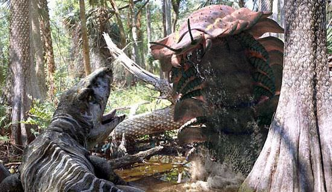
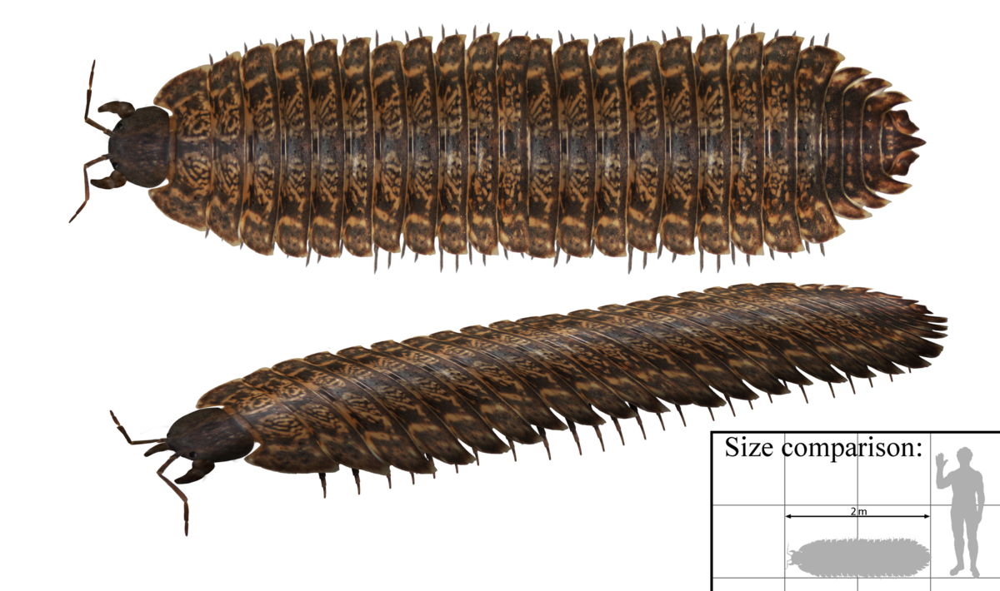

ARTHOPLEURA
GRUPO=invertebrado,artropodo,miriapodo
DATACION=carbonifero
TAMAÑO=0,3 a 2,3mde largo
LOCALIZACION=norteamerica y escocia

este milpiez gigante es el mayor invertebrado terrestre conocido de todos los tiempos,apesar de su aterradora apariencia,era herbivoro.Habitaba bosques humedos y comia musgos y vegetacion putrefacta que encontraba a su paso, a los depredadores les resultaria dificil atacarlo ya que estaba cubierto de una coraza con puas pequenas y mandibulas afiladas y poderosas, se cree que las mas pequenas y jovenes eran completamente vegetarianas y las mayores onnivoras, comiendo plantas,insectos y pequeños animales. Una arthropleura de tamaño medio debio haber nececitado una tonelada de vegetacion por año.
a medida que se movia, podria haber rozado muchos tipos diferentes de plantas y podrian haber ayudado a la reproducion del bosque moviendo el polen o esporas de un lugar a otro, se cree que podia deplazarse debajo del agua,yendo al rios ylagos para mudar de exoesqueleto lo que lo exponia a ataques de peces y amfibios. Pero en tierra una arthropleura adulta tenia pocos enemigos.

VOLVER